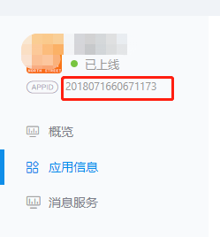

咳咳，第一篇经验分享， 薛微有点紧张，措辞可能不太严谨，请谅解~
近期公司的一个项目要求集成支付宝，微信登录和支付的功能，相信相当一部分朋友在第一次集成第三方登录或支付功能的时候，都踩了不少坑（别问我怎么知道的），我也一样，接下来我把我总结的经验跟各位分享一下。
在开始之前，我想先简单啰嗦一个概念——OAtuth2.0(开放授权)，相信之前有做过OAtuth2.0相关模块的同学们在做支付宝，微信这种第三方授权的操作都不会有什么障碍，支付宝和微信的第三方api调用框架就是流行的OAtuth2.0技术，好了不巴拉了，想深入了解的同学，自行百度吧，我就不多说了，当然，我知道的其实也不多~
一、支付宝
其实这块网上相关的介绍也不少，我的建议是，各位在做app接入的相关配置工作，就参照一个标准，即支付宝的官方文档来就好，(文档参照https://docs.open.alipay.com/204/105297)，
如果你是首次做这项功能，看这个文档可能会有点懵逼，支付宝提供的api相当多，文档也就难免混乱，但当你做完这个功能再回过头去看，发现文档还是蛮清晰的，所以还是要先静下心来看看支付宝关于接入的相关介绍，还有就是，决定做支付宝集成的项目，一定要先准备好资料，先做好相关的配置，避免浪费时间，关于app接入的配置工作我在这里只做简单总结，
在集成支付宝接口的工作开始之前需要做以下几个工作
1.到支付宝开放平台申请相关应用，（以app为例，pc网站的相对比较简单），填写一个应用名称
2.创建应用之后，会得到一个appid

3.在创建的应用上添加相应功能，登录的话需要继承支付宝app登录，支付的话添加App支付宝支付（注意只有商户号才可以申请支付宝app支付）

4.在应用信息处上传应用公钥，（使用支付宝提供的秘钥生成工具，保存私钥，将公钥上传，上传后支付宝会自动生成一个支付宝公钥，注意生成密钥的时候，注意选择rsa2（sha-256）的格式）
5.设置回调地址（这个要是一个可访问的地址，如果没有，开发阶段可先使用同步验证，确定验签方式没问题之后，等项目上线后在改回来就好）
6.设置客户端应用信息，包括Android应用包名和签名以及苹果的bundle id
好了，至此，开发前的配置阶段就完成了，对了，添加支付相关的功能时是需要签约审核的，支付宝的审核非常快，一般不到半天就下来了，总之就是要做第三方api的集成，一定要提前准备好资料，不要等到开发阶段再去准备，太浪费时间。
做好配置之后，接下来就是集成到自己的系统中了，这里集成方式我建议使用支付宝提供SDK来做，非常的方便，节省时间，当然如果你有兴趣，自己根据api请求方式封装自己的类库也完全没问题丫~
好了终于可以上代码了，咳咳，代码简陋（做了一点调整）请勿饭后观看~
项目先引用阿里sdk就不用多说了，sdk包名叫AopSdk
1 | //服务端生成请求支付宝的签名参数（参照<https://docs.open.alipay.com/218/105327/>） |
生成了请求参数后，需要app客户端通过该参数去访问阿里网关，这块具体的请求代码要看是用Android还是别的什么方式了，非常简单，就是构造一次普通的http请求，不多赘述
客户端访问阿里网关后会得到阿里的返回值，返回值文档（参照https://docs.open.alipay.com/218/105327/）
对于服务端来说，当完成上述步骤后，就可以去做支付宝的第三方登录了，我们需要通过上次请求返回的auth_code去换取access_token，从而获得用户公开信息（如昵称，头像），并将这些信息记录到本地系统，完成一次体验良好的第三方登录
核心代码如下
1 | [HttpPost] |
至此，支付宝的第三方登录功能就完成了
如果上面的流程搞明白之后，在做支付就是小菜一碟了（文档参照https://docs.open.alipay.com/204/105465/）
官方文档里讲的3步走策略如果调用sdk的话，就非常简单了
1 | /// <summary> |
至此服务端的任务完成，客户端只需根据请求步骤生产的参数向支付宝发起请求即可，手机app端会自动拉起支付宝支付的界面，直接付款即可该步骤完成后，支付宝会向我们设定的异步回调的接口发送结果信息，而我们需要做的就是验签和解析返回参数再根据自己系统的业务逻辑处理相关业务即可（参照相关文档https://docs.open.alipay.com/204/105301/）
1 | //回调函数的部分代码 |
好了，到这基本就差不多了
这里我只介绍了支付宝的，微信的整体逻辑差不太多，不过微信的会更简单一点，
那么我还要啰嗦的一点是，在做这种第三方应用集成的时候，一定要看懂人家的文档，而且，如果你对自己的技术不是那么特别自信，强烈建议使用官方或者非官方的（官方不可能提供所有语言的sdk，比如非常受欢迎的ruby）sdk来做，会非常节省项目时间，不要重复造轮子~